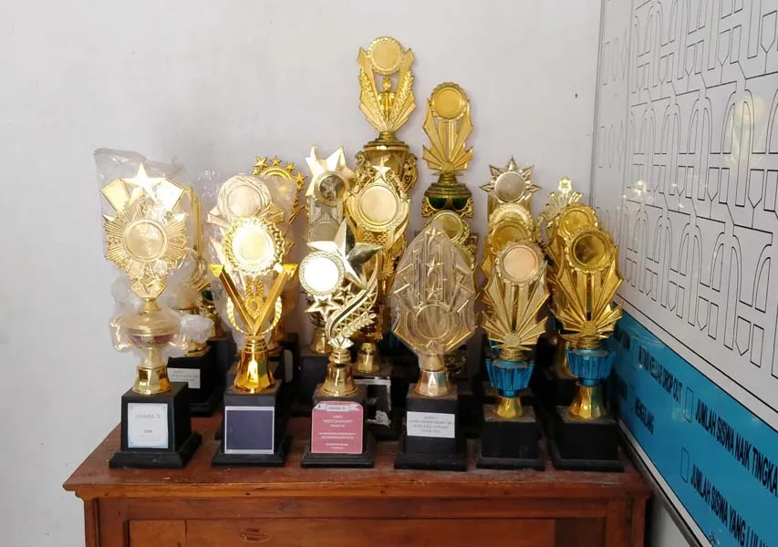

Prestasi-Prestasi
SD Negeri 288 Liang-Liang memiliki banyak prestasi dalam berbagai bidang.

SD Negeri 288 Liang-Liang memiliki beberapa prestasi, baik dalam bidang akademik, bidang kesenian, maupun bidan kesenian. Peringkat yang diraih pun bermacam-macam. Mulai dari peringkat 3 (tiga) sampai dengan peringkat 1 (satu).
Pada bulan Agustus tahun 2024, sekolah kami juga ikut dalam acara lomba memeriahkan Hari kemerdekaan Republik Indonesia yang ke-79. Dari beberapa lomba yang diikuti, Lomba Dongeng Berbahasa Konjo berhasil meraih juara 2 (dua).
- Juara 2 Lomba Dongeng HUT RI ke -79 tahun 2024
- Juara 2 Lomba Dongeng Tingkat Kecamatan
- Mentas pada acara Festival Negeri Pesisir Laut Flores & Teluk Bone ke-1, Kabupaten Bulukumba Tahun 2024